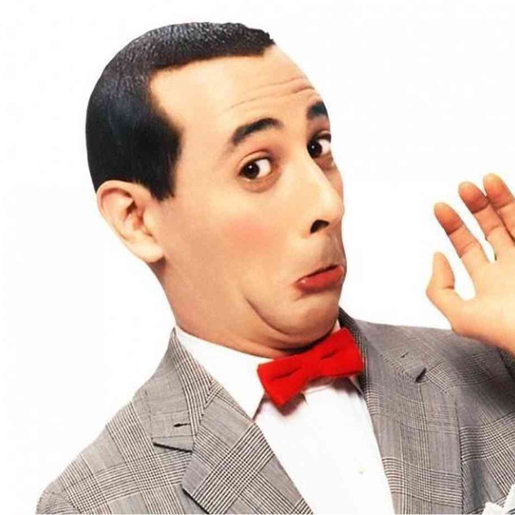
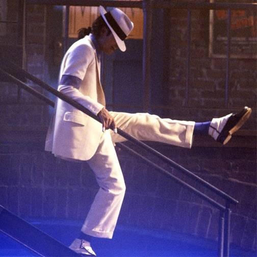
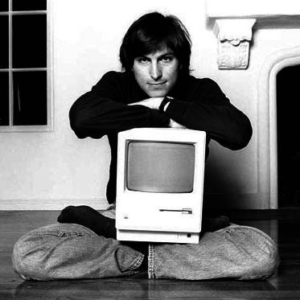
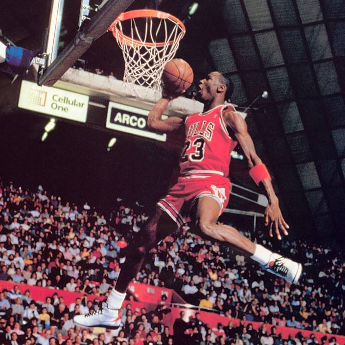
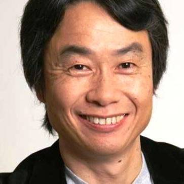
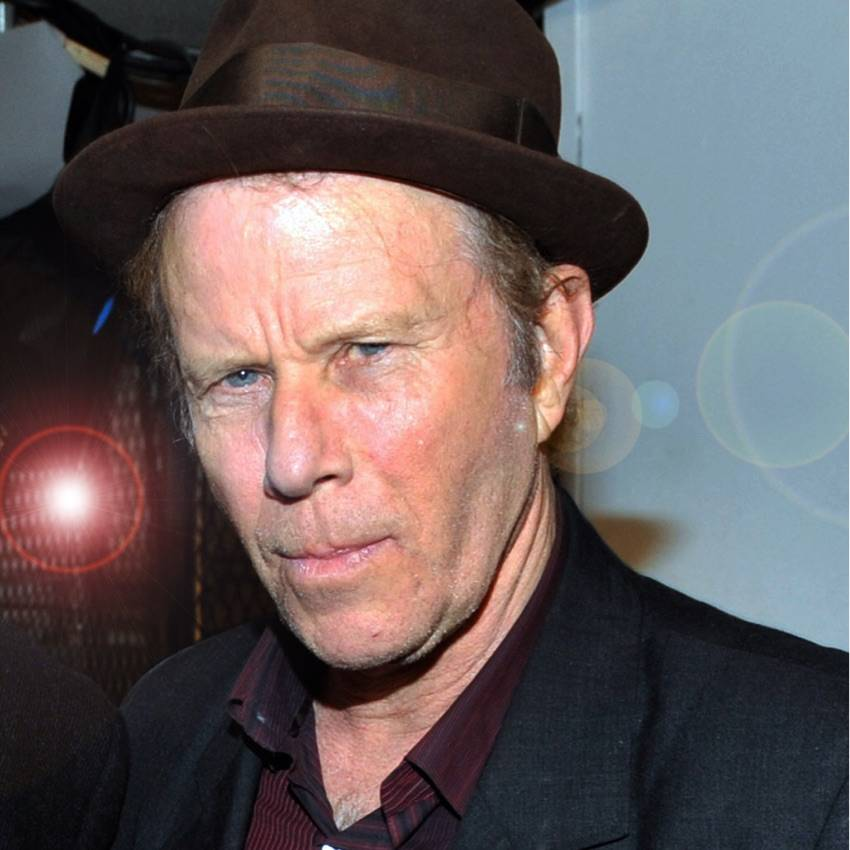

SINGULAR TALENT
People I think are both totally good at their thing and unique in that thing.
-

Paul Reubens / Pee Wee Herman
The inspiration for this list. Funny, weird, totally distinct, and completely convincing. There never was and never will be anyone really like him.
-

Michael Jackson
Child star, King of Pop, fragile soul, demonized weirdo, consummate entertainer, and possibly the greatest pop dancer who ever lived.
-

Steve Jobs
Part hippie, part visionary, part tyrant, part showman and all genius. The only major corporate CEO in history who spoke straight, cared deeply, cried on stage, and never stopped pushing.
-
William Shakespeare
Obviously he's the biggest deal, historically, in English language literature. But a lot of smart people would agree that even if you expand your search world wide, there never has been another like him. Prolific, brilliant, distinctive, and relevant across centuries. (Note: I much prefer other portraits of Shakespeare but I used this hideous thing because @ChrisK wanted an air of authenticity and I love him so I changed it.)
-

Michael Jordan
I'm not much of a sports guy. I couldn't tell you who the big stars are right now. But EVERYBODY knew Michael Jordan in his day. He dominated basketball with hard work and talent, and transcended it with brains and business sense.
-
Chef John of Food Wishes on YouTube
Not famous per se but Chef John is unpretentious, hilarious, a brilliant cook, and an awesome teacher of technique and recipes. He makes it all about the food which is unique among YouTube chefs. You never even see his face. And he teaches as he cooks. He's definitely made me a better and more confident cook.
-

Shigeru Miyamoto
There are a lot of great video games in the world but they all owe a debt of gratitude to Miyamoto, inventor of (among other things) Mario and Donkey Kong. Miyamoto is smart, playful, insightful, and a total perfectionist. If you grew up on Mario you know that everything about his games *feels* right. He's one of a kind and I encourage you to read or watch an interview with him.
-
Terry gross
I guess this is a contentious choice but for my money (in exchange for a tote bag and a chance to win an iPad) Terry Gross is the champion of interviews. Considered, well read, respectful, probing, and most of all, willing to let her subjects talk. I've been listening to her since I was a little kid. Some day she will retire and it will leave a HUGE hole in the interview world.
-

Tom Waits
This one speaks for itself. What is his genre? What kind of music is this? What is his subject matter? What is his voice like? What types of instruments are involved? What are his shows like? How does he interview? The answer to all these questions is simply: Tom Waits.
-
TBD: Elon Musk
It's a bit premature to put him on this list but I think he's got a shot at being one of a kind in the business world. Obviously brilliant, full of huge ideas, unafraid of risk, and able to raise capital for those risky big ideas. Now we see how well he can execute long term. If he succeeds, there will be nobody like him.